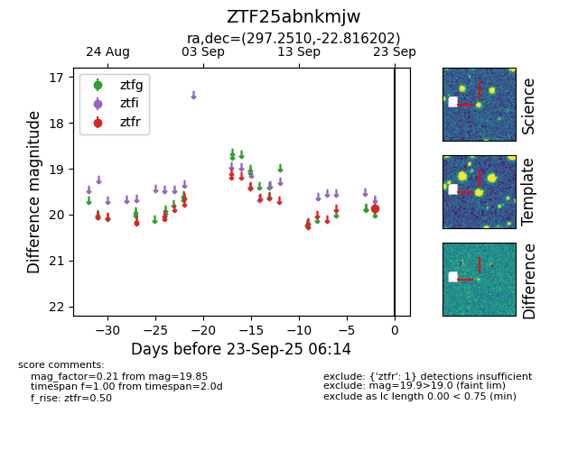

FINK: ZTF25abnkmjw
Lasair: ZTF25abnkmjw
ALeRCE: ZTF25abnkmjw
ZTF25abnkmjw (ztf,fink)
equatorial (ra, dec) = (297.2510,-22.81620)
galactic (l, b) = (17.8471,-22.37797)

last ztfr=19.85
1 ztfr detections